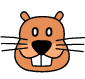
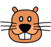
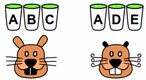
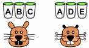

Magic Potions
Beavers found X magic potions. Each potion changes one thing in the Beaver face.
The next 3 Beavers drank X potions each. Their faces changed as shown:
Three Beavers have the potions, find the effect of each potion.
Drag potions to Beavers then press"Let the Beavers Drink".
Attention: If you try again after the Beavers drunk the potions, the potions will be mixed.
The beavers below drank a potion each. Drag each beaver under the potion he had drunk.
Attention : If you are not sure of your answer, do not fill out randomly, it is better to leave it empty.


 

 
